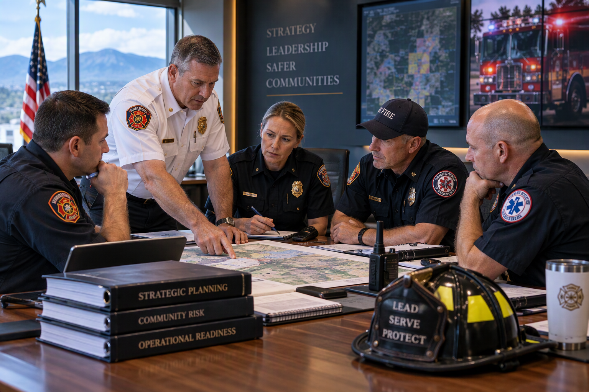

Listen First
Understand the organization's priorities, operating environment, people, and challenges before recommending a path forward.
Solis Public Safety Group helps fire, emergency services, and public safety organizations strengthen leadership, evaluate opportunities, and develop practical strategies for what comes next.
Solis Public Safety Group is focused on the organizational, leadership, and strategic challenges facing today's public safety agencies. Our work is designed to help departments gain clarity, strengthen organizational capability, and make well-informed decisions.
We approach every engagement collaboratively. We listen first, define the issue clearly, evaluate the factors that matter, and develop recommendations that can be put into practice.
Whether the need involves leadership development, organizational review, strategic planning, workforce development, or consolidation and merger assessment, our goal is the same: provide useful guidance that supports stronger organizations and safer communities.

Understand the organization's priorities, operating environment, people, and challenges before recommending a path forward.
Apply an independent public-safety perspective to help leaders see issues clearly and consider practical alternatives.
Engage stakeholders, clarify priorities, and create a shared understanding of what needs to happen next.
Translate findings and strategy into recommendations, priorities, and actions that organizations can actually use.
Public safety agencies operate in demanding environments where leadership, workforce capability, organizational structure, and long-term planning directly affect service delivery. Solis helps organizations address those underlying factors with a disciplined, practical approach.
Start with the challenge, opportunity, or decision in front of your organization. We'll help you determine a practical path forward.